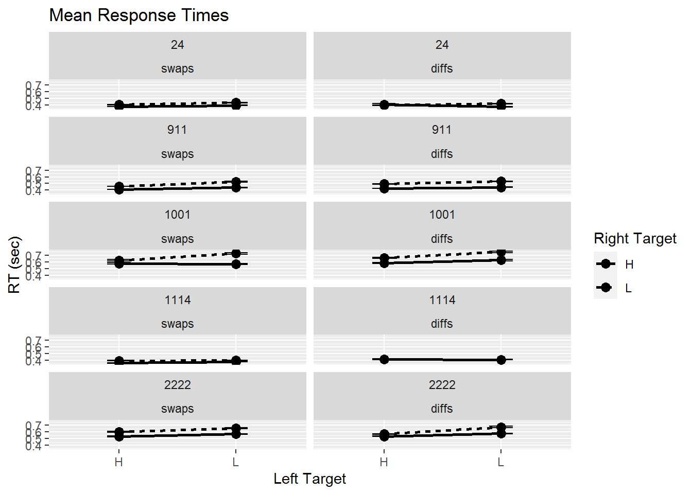
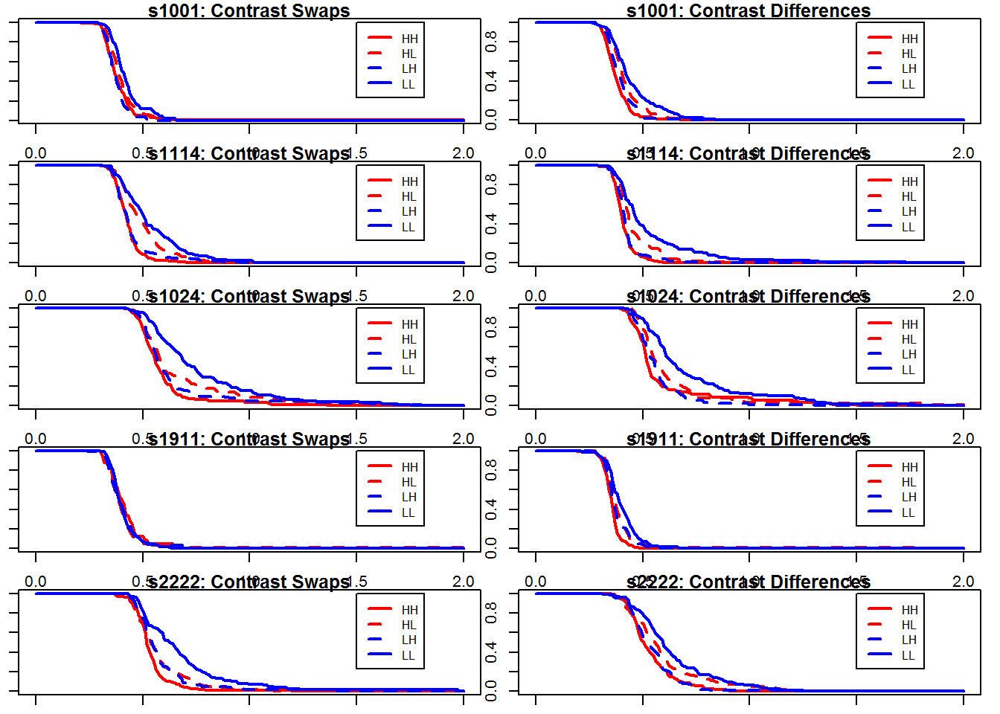

Last updated: 2020-06-08
Checks: 7 0
Knit directory: MRCHANGE/
This reproducible R Markdown analysis was created with workflowr (version 1.6.1). The Checks tab describes the reproducibility checks that were applied when the results were created. The Past versions tab lists the development history.
Great! Since the R Markdown file has been committed to the Git repository, you know the exact version of the code that produced these results.
Great job! The global environment was empty. Objects defined in the global environment can affect the analysis in your R Markdown file in unknown ways. For reproduciblity it’s best to always run the code in an empty environment.
The command set.seed(20200427) was run prior to running the code in the R Markdown file. Setting a seed ensures that any results that rely on randomness, e.g. subsampling or permutations, are reproducible.
Great job! Recording the operating system, R version, and package versions is critical for reproducibility.
Nice! There were no cached chunks for this analysis, so you can be confident that you successfully produced the results during this run.
Great job! Using relative paths to the files within your workflowr project makes it easier to run your code on other machines.
Great! You are using Git for version control. Tracking code development and connecting the code version to the results is critical for reproducibility.
The results in this page were generated with repository version 6da7858. See the Past versions tab to see a history of the changes made to the R Markdown and HTML files.
Note that you need to be careful to ensure that all relevant files for the analysis have been committed to Git prior to generating the results (you can use wflow_publish or wflow_git_commit). workflowr only checks the R Markdown file, but you know if there are other scripts or data files that it depends on. Below is the status of the Git repository when the results were generated:
Ignored files:
Ignored: .Rhistory
Ignored: .Rproj.user/
Ignored: analysis/site_libs/
Untracked files:
Untracked: code/MRCHANGE_PY/
Note that any generated files, e.g. HTML, png, CSS, etc., are not included in this status report because it is ok for generated content to have uncommitted changes.
These are the previous versions of the repository in which changes were made to the R Markdown (analysis/index.Rmd) and HTML (docs/index.html) files. If you’ve configured a remote Git repository (see ?wflow_git_remote), click on the hyperlinks in the table below to view the files as they were in that past version.
| File | Version | Author | Date | Message |
|---|---|---|---|---|
| html | 6da7858 | knowlabUnimelb | 2020-06-08 | Build site. |
| Rmd | 0b1cfa8 | knowlabUnimelb | 2020-06-08 | Update analysis |
| html | c7e7218 | knowlabUnimelb | 2020-06-03 | Build site. |
| html | 781ce6e | knowlabUnimelb | 2020-05-14 | Build site. |
| html | 1bc795c | knowlabUnimelb | 2020-05-14 | Build site. |
| Rmd | 267c256 | knowlabUnimelb | 2020-05-14 | wflow_publish(all = TRUE) |
| html | 267c256 | knowlabUnimelb | 2020-05-14 | wflow_publish(all = TRUE) |
| html | 627875b | knowlabUnimelb | 2020-04-27 | Build site. |
| Rmd | b1a8f91 | knowlabUnimelb | 2020-04-27 | Initial commit |
| Rmd | 1a4ffe5 | knowlabUnimelb | 2020-04-27 | Start workflowr project. |
David Mussoff, Anthea G. Blunden, and Daniel R. Little The University of Melbourne
This project is for the SFT analysis of a same-direction and opposite-direction change detection task.
The background of this study and preregistration is located here.
We tested 2 participants for 10 sessions: 5 sessions in the contrast swaps condition and 5 sessions in the contrast difference condition. One participant (s1114) completed 6 sessions of the contrast swaps condition.
We computed the mean accuracy and response time for each item in each condition.
| subjects | condition | HH | HL | LH | LL | HS | LS | SH | SL | SS | |
|---|---|---|---|---|---|---|---|---|---|---|---|
| 1 | 1001 | swaps | 240 | 240 | 240 | 240 | 244 | 244 | 242 | 230 | 1920 |
| 3 | 1001 | diffs | 192 | 192 | 192 | 192 | 210 | 190 | 182 | 186 | 1536 |
| 2 | 1114 | swaps | 272 | 272 | 272 | 272 | 258 | 290 | 276 | 264 | 2174 |
| 4 | 1114 | diffs | 240 | 240 | 240 | 240 | 240 | 248 | 238 | 234 | 1920 |
| subjects | condition | HH | HL | LH | LL | HS | LS | SH | SL | SS | |
|---|---|---|---|---|---|---|---|---|---|---|---|
| 1 | 1001 | swaps | 0.99 | 0.98 | 0.99 | 0.91 | 0.98 | 0.51 | 1.00 | 0.86 | 0.93 |
| 3 | 1001 | diffs | 0.99 | 0.98 | 0.99 | 0.96 | 0.96 | 0.46 | 0.99 | 0.80 | 0.93 |
| 2 | 1114 | swaps | 0.18 | 0.93 | 0.93 | 0.90 | 0.92 | 0.76 | 0.88 | 0.82 | 0.94 |
| 4 | 1114 | diffs | 1.00 | 0.99 | 0.93 | 0.74 | 0.95 | 0.77 | 0.78 | 0.70 | 0.92 |
| subjects | condition | HH | HL | LH | LL | HS | LS | SH | SL | SS | |
|---|---|---|---|---|---|---|---|---|---|---|---|
| 1 | 1001 | swaps | 0.581 | 0.659 | 0.626 | 0.753 | 0.636 | 0.799 | 0.612 | 0.791 | 0.740 |
| 3 | 1001 | diffs | 0.572 | 0.625 | 0.566 | 0.743 | 0.654 | 0.767 | 0.642 | 0.861 | 0.754 |
| 2 | 1114 | swaps | 0.414 | 0.413 | 0.409 | 0.408 | 0.406 | 0.410 | 0.407 | 0.439 | 0.387 |
| 4 | 1114 | diffs | 0.359 | 0.396 | 0.373 | 0.396 | 0.400 | 0.392 | 0.394 | 0.413 | 0.379 |
| subjects | condition | HH | HL | LH | LL | HS | LS | SH | SL | SS | |
|---|---|---|---|---|---|---|---|---|---|---|---|
| 1 | 1001 | swaps | 0.477 | 1.054 | 0.730 | 0.785 | 0.745 | 0.859 | NA | 1.221 | 1.100 |
| 3 | 1001 | diffs | 0.644 | 0.600 | 0.550 | 0.618 | 0.574 | 0.722 | 0.643 | 0.791 | 0.791 |
| 2 | 1114 | swaps | 0.418 | 0.441 | 0.367 | 0.415 | 0.379 | 0.385 | 0.362 | 0.368 | 0.437 |
| 4 | 1114 | diffs | 0.336 | 0.372 | 0.387 | 0.398 | 0.399 | 0.377 | 0.392 | 0.416 | 0.381 |
We plotted the double target items as a function of the discriminability in each location.

We tested the interaction between the discriminability of the left target and right target using an adjusted rank transform test.
| condition | mic | stat | p |
|---|---|---|---|
| swaps | 0.049 | 0.05 | 0e+00 |
| diffs | 0.124 | 0.10 | 8e-04 |
| condition | mic | stat | p |
|---|---|---|---|
| swaps | 0.000 | 0.00 | 0.1545 |
| diffs | -0.014 | -0.01 | 0.3402 |
We tested the ordering of the survivor functions using a series of Kolmogorov-Smirnoff test. If stochastic dominance is preserved, then we expect the first four tests to be significant while the second four tests are not.

| Test | ks.swaps | p.swaps | ks.diffs | p.diffs |
|---|---|---|---|---|
| S.hh > S.hl | 0.196 | 0.000 | 0.291 | 0.000 |
| S.hh > S.lh | 0.109 | 0.058 | 0.200 | 0.001 |
| S.hl > S.ll | 0.323 | 0.000 | 0.293 | 0.000 |
| S.lh > S.ll | 0.394 | 0.000 | 0.388 | 0.000 |
| S.hh < S.hl | 0.000 | 1.000 | 0.052 | 0.596 |
| S.hh < S.lh | 0.000 | 1.000 | 0.095 | 0.182 |
| S.hl < S.ll | 0.019 | 0.921 | 0.023 | 0.907 |
| S.lh < S.ll | 0.019 | 0.920 | 0.000 | 1.000 |
| Test | ks.swaps | p.swaps | ks.diffs | p.diffs |
|---|---|---|---|---|
| S.hh > S.hl | 0.093 | 0.496 | 0.238 | 0.000 |
| S.hh > S.lh | 0.070 | 0.674 | 0.154 | 0.004 |
| S.hl > S.ll | 0.123 | 0.024 | 0.175 | 0.002 |
| S.lh > S.ll | 0.144 | 0.006 | 0.249 | 0.000 |
| S.hh < S.hl | 0.133 | 0.240 | 0.000 | 1.000 |
| S.hh < S.lh | 0.082 | 0.583 | 0.000 | 1.000 |
| S.hl < S.ll | 0.024 | 0.868 | 0.039 | 0.729 |
| S.lh < S.ll | 0.080 | 0.202 | 0.038 | 0.747 |
We tested the architecture underlying change detection decision using the survivor interaction contrast.
We tested the significance of the positive and negative SIC regions using the Houpt-Townsend D+ and D- statistics.
| condition | test | stat | p |
|---|---|---|---|
| swaps | D+ | 0.26 | 0.00 |
| swaps | D- | 0.05 | 0.79 |
| diffs | D+ | 0.26 | 0.00 |
| diffs | D- | 0.11 | 0.35 |
| condition | test | stat | p |
|---|---|---|---|
| swaps | D+ | 0.17 | 0.16 |
| swaps | D- | 0.05 | 0.87 |
| diffs | D+ | 0.17 | 0.16 |
| diffs | D- | 0.05 | 0.87 |
sessionInfo()R version 3.6.3 (2020-02-29)
Platform: x86_64-w64-mingw32/x64 (64-bit)
Running under: Windows 7 x64 (build 7601) Service Pack 1
Matrix products: default
locale:
[1] LC_COLLATE=English_Australia.1252 LC_CTYPE=English_Australia.1252
[3] LC_MONETARY=English_Australia.1252 LC_NUMERIC=C
[5] LC_TIME=English_Australia.1252
attached base packages:
[1] stats graphics grDevices utils datasets methods base
other attached packages:
[1] knitr_1.28 reshape2_1.4.3 sft_2.2-1 SuppDists_1.1-9.5
[5] fda_5.1.4 Matrix_1.2-18 forcats_0.5.0 stringr_1.4.0
[9] dplyr_0.8.5 purrr_0.3.3 readr_1.3.1 tidyr_1.0.2
[13] tibble_3.0.0 ggplot2_3.3.0 tidyverse_1.3.0 workflowr_1.6.1
loaded via a namespace (and not attached):
[1] Rcpp_1.0.4 lubridate_1.7.4 lattice_0.20-38 assertthat_0.2.1
[5] rprojroot_1.3-2 digest_0.6.25 plyr_1.8.6 R6_2.4.1
[9] cellranger_1.1.0 backports_1.1.5 reprex_0.3.0 evaluate_0.14
[13] highr_0.8 httr_1.4.1 pillar_1.4.3 rlang_0.4.5
[17] readxl_1.3.1 rstudioapi_0.11 whisker_0.4 rmarkdown_2.1
[21] labeling_0.3 splines_3.6.3 munsell_0.5.0 broom_0.5.5
[25] compiler_3.6.3 httpuv_1.5.2 modelr_0.1.6 xfun_0.12
[29] pkgconfig_2.0.3 htmltools_0.4.0 tidyselect_1.0.0 fansi_0.4.1
[33] crayon_1.3.4 dbplyr_1.4.2 withr_2.1.2 later_1.0.0
[37] grid_3.6.3 nlme_3.1-144 jsonlite_1.6.1 gtable_0.3.0
[41] lifecycle_0.2.0 DBI_1.1.0 git2r_0.26.1 magrittr_1.5
[45] scales_1.1.0 cli_2.0.2 stringi_1.4.6 farver_2.0.3
[49] fs_1.4.1 promises_1.1.0 xml2_1.3.0 ellipsis_0.3.0
[53] generics_0.0.2 vctrs_0.2.4 tools_3.6.3 glue_1.4.0
[57] hms_0.5.3 yaml_2.2.1 colorspace_1.4-1 rvest_0.3.5
[61] haven_2.2.0